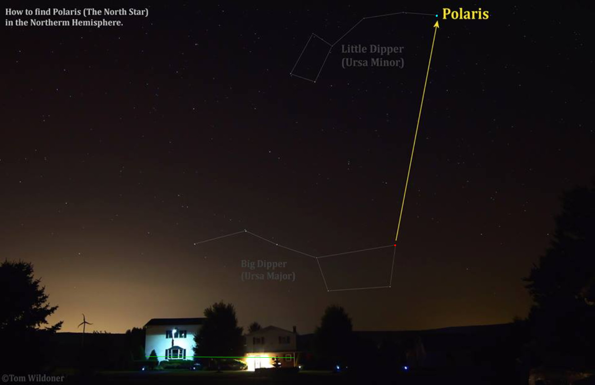
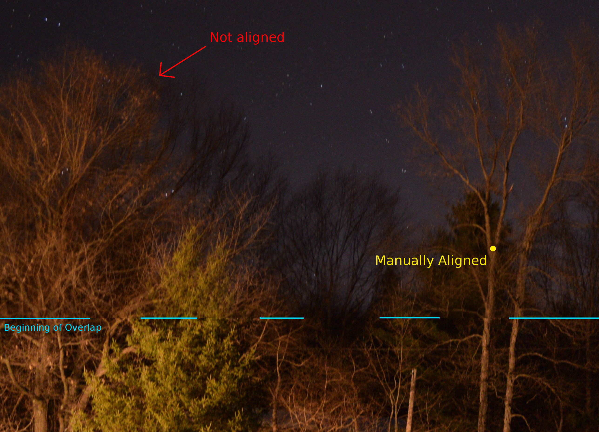

For centuries, sailors and explorers have used the stars to determine their position on the globe. By measuring the angle that the North Star (Polaris) appears above the horizon, navigators could determine their latitude. By measuring the rotation of the field of stars, and comparing to the time, navigators could determine their longitude.
Nowadays, these skills are all but forgotten. We can simply take any GPS enabled device and immediately know our location to within about fifty feet – hundreds of times better accuracy than what was possible with conventional star-based navigation.
Last week I had the idea, "What if we used a camera and a computer to find our position?" It seemed a single picture of the sky would provide all the information necessary to find one's position on the globe. This was my plan for calculating the position of a picture of the sky:
- Measure the number of pixels between one specific star and another. (I decided to use Duhbe and Polaris) This allows you to figure out how many degrees of the sky are covered by one pixel.
- Measure the number of pixels between the horizon and Polaris. Multiply by the number from the previous step. This will be the angle between the horizon and Polaris, which will be equal to the latitude at which the picture was taken.
- Measure the angle that some specific star appears to be around Polaris. (Imagine something like a clock, with Polaris at the center and another star moving counter-clockwise around Polaris as the earth spins) By knowing this and the GMT time, one can calculate the longitude at which the picture was taken.
With this plan in mind, I started writing a program in Javascript to help me perform the above calculations. I planned to have it instruct the user to click on the horizon, Polaris, and Duhbe, and then have it run all the subsequent calculations automatically.
I wrote a prototype of my program fairly quickly. From the locations a user clicked, it calculated the number of degrees per pixel and then tried to calculate only the latitude. (I planned to add longitude later) I looked around on the Internet for some star pictures to test my program with. I found the actual locations at which the pictures were taken by using other sources, and then opened the pictures in my program.

A test picture after I clicked on the reference points and entered them into my program. The picture was taken at about 3:30 AM in July 2013. The green line shows the horizon line I inputted, the red dot shows my input for the location of Dubhe, the cyan dot shows my input for Polaris. My program estimated the latitude to be 42.007 degrees. The actual latitude is 40.898 degrees. Photo credit: Tom Wildoner. I found the picture here
Sadly, my program's estimates of latitude were usually a few degrees different from the real values. (Admittedly, these values were fairly accurate, but their accuracy is nowhere near what seems possible) I sort of scratched my head and waited till the weather cleared up and I could take my own test pictures.
When the weather cleared up, I went outside and took pictures. Because my camera (a Nikon D3300 with a lens set to 18mm) did not have a wide enough viewing angle to reach from the horizon to Duhbe, I needed to take several overlapping pictures. When I went to stitch my pictures together, I encountered a problem: my pictures did not line up.
For a little bit, I did not know what the problem was. Were my pictures rotated differently? Had I accidentally changed the focal length between the pictures? Neither of these made sense, so I looked for other answers. Soon I had a guess of what the problem was: my lens caused my image to be significantly distorted. To confirm this theory, I tried taking a picture of a straight yardstick held a few feet away from my camera. And sure enough, the yardstick appeared bent in my picture.

This image illustrates the problem I encountered when trying to stitch two images together. The cyan lines show the boundary between the images. The upper image is slightly transparent to allow the lower image to show through. I tried to offset the images so they aligned at the location marked by the yellow dot. However, it is clear that they do not align in areas far away from the dot. Both images were taken with a focal length of 18mm
I'm not convinced that my goal is impossible, but I'll need to do a lot more work to get my program to output really accurate values. In theory, in order to make my program give very accurate estimates of latitude, I will have to:
- Find some way of removing lens distortion in the pictures, as this is stopping me from stitching my images together and may also be causing inaccuracies in my results. There must be some way of removing this distortion, because programs for making panoramas must have to account for it.
- See if that is the whole problem (I'm not entirely sure that it is)
- Correct for any other problems with the pictures
- Stitch my pictures together into one large image (Or use other people's wider angle images)
- Correct for astronomical errors (For example, Polaris is actually about 0.8 degrees away from the real celestial pole, so its angle above the horizon will not exactly equal the latitude of a picture)
I may or may not take the time and effort to implement this plan. In any case, this project has been an interesting foray into image stitching and accurate, GPS-independent navigation!
Comment on Twitter